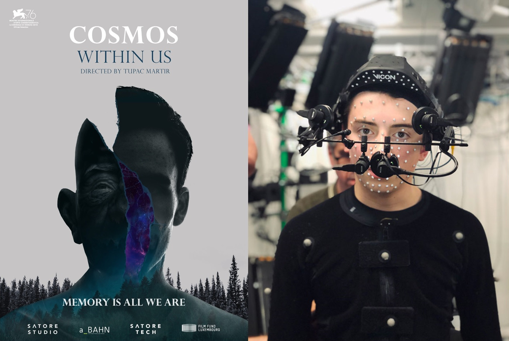

I am a Principal Scientist Manager at Microsoft (since 2021) - based out of the Cambridge, UK office - where I work on AI for human understanding for Presence and Mixed Reality - in products such as Teams and Microsoft Mesh.
Up to 2021 I was a full time Professor Computer Science at the University of Bath, where I joined as a Royal Academy of Engineering/ EPSRC Research Fellow in 2007 and still hold a small part-time position. I have been fortunate enough to be awarded two previous Research Fellowships: Royal Academy of Engineering, 2007-2012, Royal Society Industry Fellowship (with Double Negative Visual Effects), 2012-2016.
In 2015 I founded and was Director of the Centre for the Analysis of Motion, Entertainment Research and Applications (CAMERA), funded by EPSRC/AHRC, with partner contributions from The Imaginarium, The Foundry, British Skeleton, Ministry of Defence and British Maritime Technologies. In 2020 I led the successful re-funding of CAMERA for another 5 years (EPSRC) and helped secure the £45m+ MyWorld project in the South West of the UK.
My primary research interest has always been on human motion analysis, recognition and synthesis - particulary for animation with applications in Video Games, Virtual Worlds, Mixed Reality and Movies.
I have always been a believer that you shouldn't do research and then just 'throw it over the wall' for others to take to real users and customers. In fact, most of the hard - and really interesting work - starts when you get your great reseach ideas into real people hands. Then you find out a few things - does it really work on real data? Is it robust? You will discover dozens of things that are wrong, could be improved, and even better a set of new problems. At Microsoft I have been fortunate to get research into the hands of millions of customers through Mesh and Teams. In CAMERA I created a model whereby we translated research into impact by creating tools from our research, deploying them into our studio, and then delivering projects to clients that leverage these tools. Below is a snapshot of some of the projects I have been fortunate enough to be involved in!

|
|

|
| Microsoft Mesh - Mesh is a platform that allows people to connect in virtual worlds - on desktop, or VR. | Mesh Avatars in Teams - Mesh Avatars are animated by voice using AI technology developed by myself and my team at Microsoft. | Immersive Meetings - The Avatar technology and AI audio features are also shipped in 3D experiences on Quest and Windows. |

|
 | |
| 11:11 Memories Retold - with Aardman and Bandai Namco (BAFTA nominated). We delivered all motion capture for the video game at our CAMERA studio. | 'Is Anna OK?' - with BBC and Aardman. An immersive experience delivered with our in-house facial rigging, animation and motion capture solution. | Cosmos Within Us - with Satore Studios (Cannes Lion Winner). We build digital doubles for performers and animated them using our in house tools. |
I have always been interested in people - and understanding how they move so we can model this and then learn to create better animation systems. This involves peoples faces, bodies, the environment, each other - and then the application to video games, movies, remote communication. I believe motion should always be higher fidelity than appearance - and poor appearance and great motion will always be better than great appearance and poor motion.
Along this direction I have explored many projects in the past - both in academia and industry - and established new teams as well as multiple commercial grade motion capture production studios. Below is an overview of my research based on different areas I have worked on. It is a representative list of papers only by broad topic area - for a full list see the research papers section.

|

|

|

|

|

|

|
| Evolutionary Facial Animation - CGF 2019 | Content Aware Deformation - CVMP 2015 | Procedural Facial Animation - CGF 2018 | Reading Between the Dots: Facial Capture- GI 2017 | Dynamic Morphable Models: D3DFACS - ICCV 2011 | 4D Facial Movement for Biometrics - IEEE SMC 2010 | Speech Driven Facial Animation - ICPR 2004 |

|

|

|
||
| RGBD-Dog: Predicting Canine Pose from RGBD - CVPR 2020 | Scale Aware Performance Retargeting - CGI 2019 | Markerless Motion Capture Survey - Sports Medicine 2018 | Markerless Sprint Analysis - WACV 2018 | Elastic Deformation - MIG 2018 |

|

|

|

|

|
|
| Image to Image Translation - NeurIPS 2018 | Multi-task Learning - CVPR 2018 | Blur Robust Robust Optical Flow - PR 2017 | Inferring Focal Length - CG 2015 | Shadow Removal - BMVC 2014 | Robust Feature Tracking - ACCV 2013 |

|

|

|
|||
| Camera Tracking in Visual Effects - DigiPro 2016 | Mesh based Optical Flow - CVPR 2013 | Non-Rigid Optical Flow Ground Truth - RAL 2016 | Water Reconstruction from Video - TVCG 2015 |

|

|

|

|

|
| Nonlinear 4D Facial Perception - ACM APGV / SAP 2011 | Facial Dynamics and Trustworthiness - Emotion 2008 | Perceptual Evaluation of Video Based Facial Animation - ACM TAP 2005 | Evaluation of Foveated Rendering Methods - ACM SAP 2016 | Evaluation of Gesture Based Interfaces - Pervasive 2011 |

|

|

|
|||
| Real World Objects for Egocentric VR - IEEEVR 2020 | Creating Virtual Props - ISMAR 2019 | Real Time Object Deformation for VR - SIGGRAPH 2019 (poster) | Multi-Camera / RGBD Object Tracking - SCA 2019 | Tracking Head Mounted Displays - VRST 2014 | Latency Aware Foveated Rendering - CVMP 2015 |
At Microsoft I lead a team of amazingly talented scientists and engineers. But as a Professor and previous Director of CAMERA I was also fortunate to work with some amazing students, researchers and engineers.
Martin Parsons (CAMERA), Murray Evans (CAMERA), Yiguo Qiao (Living With/RUH/InnovateUK), Jack Saunders, George Fletcher, Jake Deane, Kyle Reed (Cubic Motion); Jose Serra (Digital Domain/ ILM), Anamaria Ciucanu (MMU), Pedro Mendes, Shridhar Ravikumar (Amazon, Apple); Alastair Barber (The Foundry); Wenbin Li (Bath); Han Gong (Apple); Charalampos Koniaris (Disney Research); Daniel Beale; Sinan Mutlu (Framestore); Nicholas Swafford; Nadejda Roubtsova (CAMERA); Sinead Kearney (CAMERA); Maryam Naghizadeh; Catherine Taylor (Marshmallow Laser Feast)
(PI) 2020-2025: CAMERA 2.0 - Centre for the Analysis of Motion, Entertainment Research and Applications (£4,151,614 FEC). EPSRC
(PI) 2019-2021: CAMERA Motion Capture Innovation Studio (£901,391) Horizon 2020
(PI) 2019-2022: A tool to reveal Individual Differences in Facial Perception (£402,113) Medical Research Council (MRC)
(PI) 2018-2020: Rheumatoid Arthritis Flare Profiler (£165,126, Total project value £663,290). Partners: Living With, NHS. InnovateUK
(Co-I) 2018-2022: Bristol and Bath Creative Cluster (~£4m). Partners: UWE, University of Bristol, Bath Spa University. AHRC
(PI) 2017-2019: DOVE: Deformable Objects for Virtual Environments (£128,746, Total project value £562,559 FEC). Partner: Marshmallow Laser Feast, Heston's Fat Duck. Innovate UK
(PI) 2016-2018: HARPC: HMC for Augmented Reality Performance Capture (£119,025, Total project value £517,616 FEC). Partner: The Imaginarium. Innovate UK
(PI) 2015-2020: Centre for the Analysis of Motion, Entertainment Research and Applications - CAMERA (£ 4,998,728 FEC). Partners: The Imaginarium, The Foundry, Ministry of Defence, British Maratime Technologies, British Skeleton. EPSRC/AHRC. (not including partner contributions, ~£5,000,000).
(PI) 2015-2017: Biped to Animal (£108,109 FEC). Parter: The Imaginarium. Innovate UK.
(PI) 2015: Goal Oriented Real Time Intelligent Performance Retargeting (£29,997 FEC). Partner: The Imaginarium. Innovate UK.
(Co-I) 2013-2016: Acquiring Complete and Editable Outdoor Models from Video and Images (£1,003,256 FEC). EPSRC.
(PI-Bath) 2014-2017: Visual Image Interpretation in Man and Machine (VIIMM) (£121,030 FEC). Partner: University of Birmingham. EPSRC
(PI) 2012-2016: Next Generation Facial Capture and Animation (£100,887 FEC). Partner: Double Negative Visual Effects. The Royal Society Industry Fellowship.
(PI) 2007-2012: Exploiting 4D Data for Creating Next Generation Facial Modelling and Animation Techniques (£460,640FEC). The Royal Academy of Engineering Research Fellowship.
Other funding: PhD Studentships, EPSRC Innovation Acceleration Account (IAA), Nuffield Foundation.
RGBD-Dog RGBD-Dog contains motion capture and multiview (Sony) RGB and (Kinect) RGBD data for several dogs performing different actions (all cameras and mo-cap syncronised with calibration data included. You can get the data, code to view and the CVPR 2020 paper it is all based on from our GitHub page. In our CVPR 2020 paper we use the data to train a model to predict dog pose from RGBD data. However, it also works pretty well on other animals. In the future we will expand the data and code as we publish more of our research.
D3DFACS The D3DFACS Dataset contains over 500 FACS coded dynamic 3D (4D) sequences from 10 individuals - including 3D meshes, stereo UV maps, colour camera images and calibration files. You can find out more about it in our ICCV 2011 paper "A FACS Valid 3D Dynamic Action Unit Database with Applications to 3D Dynamic Morphable Facial Modelling". If you would like to download the dataset for academic research, please visit the data set website
Shadow Removal Ground Truth and Evaluation To encourage the open comparison of single image shadow removal in community, we provide an online benchmark site and a dataset. Our quantitatively verified high quality dataset contains a wide range of ground truth data (214 test cases in total). Each case is rated according to 4 attributes, which are texture, brokenness, colourfulness and softness, in 3 perceptual degrees from weak to strong. To access the evaluation website, please visit here.
There are many better systems these days at keeping track of personal papers - e.g. my Google Scholar page or University of Bath Pure page. So, I apologies if this page is not maintained as well as I would like and papers are missing!
-
Estimating camera intrinsics from motion blur
A Barber, M Brown, P Hogbin, D Cosker
Proceedings of the 11th European Conference on Visual Media Production (CVMP), 2014
Dual sensor filtering for robust tracking of head-mounted displays
Nicholas T Swafford, Bastiaan J Boom, Kartic Subr, David Sinclair, Darren Cosker, Kenny Mitchell
ACM Symp. on VR Software and Technology (VRST), 2014
Interactive Shadow Editing from Single Images
Asian Conference on Computer Vision (ACCV), Workshops, 243-252, 2014
Interactive shadow removal and ground truth for variable scene categories (BEST STUDENT PAPER PRIZE)
British Machine Vision Conference (BMVC), 2014
Survey of Texture Mapping Techniques for Representing and Rendering Volumetric Mesostructure
C Koniaris, D Cosker, X Yang, K Mitchell
Journal of Computer Graphics Techniques, 2014
Robust optical flow estimation for continuous blurred scenes using rgb-motion imaging and directional filtering (BEST STUDENT PAPER PRIZE)
W Li, Y Chen, JH Lee, G Ren, D Cosker
IEEE Winter Conf. on Applications of Comp. Vis. (WACV),792-799, 2014
-
Real-time content-aware texturing for deformable surfaces
C Koniaris, D Cosker, X Yang, K Mitchell, I Matthews
Proceedings of the 10th European Conference on Visual Media Production (CVMP), 2013
Applications of face analysis and modeling in media production
D Cosker, P Eisert, O Grau, PJB Hancock, J McKinnell, EJ Ong
IEEE Multimedia, 20 (4), 18-27, 2013
User-aided single image shadow removal
H Gong, D Cosker, C Li, M Brown
IEEE International Conference on Multimedia and Expo (ICME), 2013
Water surface modeling from a single viewpoint video
C Li, D Pickup, T Saunders, D Cosker, D Marshall, PS Hall, P Willis
IEEE Transactions onVisualization and Computer Graphics, 19 (7), 1242-1251, 2013
Optical flow estimation using laplacian mesh energy
W Li, D Cosker, M Brown, R Tang
IEEE Conference on Computer Vision and Pattern Recognition (CVPR), 2013
Content aware texture mapping on deformable surfaces
C Koniaris, D Cosker, X Yang, KJ Mitchell, I Matthews
US Patent App. 13/838,840
An anchor patch based optimization framework for reducing optical flow drift in long image sequences
Asian Conference on Computer Vision (ACCV), 112-125, 2013
Realtime video based water surface approximation
C Li, M Shaw, D Pickup, D Cosker, P Willis, P Hall
European Conference in Visual Media Production (CVMP), 109-117, 2011
A FACS valid 3D dynamic action unit database with applications to 3D dynamic morphable facial modeling
D Cosker, E Krumhuber, A Hilton
IEEE International Conference on Computer Vision (ICCV), 2296-2303, 2011.
Identifying and evaluating gestural interaction in ubiquitous and pervasive computing
Michael Wright, CJ Lin, Darren Cosker, Eamonn O'Neill, Paul Johnson
Proceedings GW2011: The 9th International Gesture Workshop: Gesture in Embodied Communication and Human-Computer Interaction, 2011
Reconstructing mass-conserved water surfaces using shape from shading and optical flow
D Pickup, C Li, D Cosker, P Hall, P Willis
Asian Conference on Computer Vision (ACCV), 189-201, 2011
3D gesture recognition: an evaluation of user and system performance
M Wright, CJ Lin, E O’Neill, D Cosker, P Johnson
Pervasive Computing. Lecture Notes in Computer Science (LNCS), 294-313, 2011
A FACS validated 3D human facial model
D Cosker, E Krumhuber, A Hilton
Proceedings of the SSPNET 2nd International Symposium on Facial Analysis and Animation (FAA), 2010
Perception of linear and nonlinear motion properties using a FACS validated 3D facial model
D Cosker, E Krumhuber, A Hilton
Proceedings of the 7th Symposium on Applied Perception in Graphics and Visualisation (APGV), 2010
Facial Actions for Biometric Applications
Lanthao Benedikt, Paul L. Rosin, David Marshall, Darren Cosker, Hashmat Popat, Stephen Richmond
Assessing the uniqueness and permanence of facial actions for use in biometric applications
Lanthao Benedikt, Darren Cosker, Paul L Rosin, David Marshall
Effects of dynamic attributes of smiles in human and synthetic faces: A simulated job interview setting
E Krumhuber, ASR Manstead, D Cosker, D Marshall, PL Rosin
Journal of Nonverbal Behavior 33 (1), 1-15, 2009
Incremental Learning of Dynamical Models of Faces
C. Charron, Y. A. Hicks, P. Hall and D. Cosker
In Proc. British Machine Vision Conference (BMVC), 2009.
Laughing, crying, sneezing and yawning: Automatic voice driven animation of non-speech articulations
Proceedings of Computer Animation and Social Agents (CASA), 2009
Three‐dimensional motion analysis–an exploratory study. Part 1: Assessment of facial movement
H Popat, S Richmond, R Playle, D Marshall, PL Rosin, D Cosker
Orthodontics & craniofacial research 11 (4), 216-223, 2008
3D Facial Gestures in Biometrics: from Feasibility Study to Application
L. Benedikt, D. Cosker, D. Marshall, P. L. Rosin
Facial Dynamics in Biometric Identification
L Benedikt, V Kajic, D Cosker, PL Rosin, AD Marshall
In Proc. of British Machine Vision Conference (BMVC), 1-10, 2008
Re-mapping animation parameters between multiple types of facial model
D Cosker, R Borkett, D Marshall, PL Rosin
Lecture Notes in Computer Science (LNCS), 4418, 365-378, 2007
Construction and perceptual evaluation of a 3D head model
Facial dynamics as indicators of trustworthiness and cooperative behavior
E Krumhuber, ASR Manstead, D Cosker, D Marshall, PL Rosin, A Kappas
Using Dynamic 3D Facial Data to Create 3D Appearance Models of Facial Action Units
-
Speech driven facial animation using a hidden markov coarticulation model
D Cosker, D Marshall, PL Rosin, Y Hicks Pattern Recognition
17th IEEE International Conference on Pattern Recognition (ICPR), 2004
Blur Robust Optical Flow using Motion Channel
Wenbin Li, Yang Chen, JeeHang Lee, Gang Ren, Darren Cosker
Drift Robust Non-rigid Optical Flow Enhancement for Long Sequences
Wenbin Li, Darren Cosker, Matthew Brown
Journal of Intelligent and Fuzzy Systems, JIFS 2016
Facial Capture and Animation in Visual Effects
Darren Cosker, Peter Eisert and Volker Helzle
Inferring Changes in Intrinsic Parameters from Motion Blur
A Barber, M Brown, P Hogbin, D Cosker
Computers & Graphics, 52, 155-170, 2015
Latency aware foveated rendering in unreal engine 4
NT Swafford, D Cosker, K Mitchell
Proceedings of the 12th European Conference on Visual Media Production (CVMP), 2015
Real-time variable rigidity texture mapping
C Koniaris, K Mitchell, D Cosker
Proceedings of the 12th European Conference on Visual Media Production (CVMP), 2015
Perceived Emotionality of Linear and Non-Linear AUs Synthesised using a 3D Dynamic Morphable Facial Model
D Cosker, E Krumhuber, A Hilton
Facial Analysis and Animation/Audio Visual Speech Processing (FAAVSP), 2015
Below is a collection of previous activities - including workshops (at CVPR, ACCV, etc) and EPSRC research networks I have co-founded - kept here for future reference (mine as much as anything!)
EPSRC Network on Visual Image Interpretation in Humans and Machines (ViiHM)
Understanding the environment via the sense of vision represents a challenging problem in computer science. Yet biological vision, as evidenced in the human visual system, seems to process the visual environment effortlessly. This supports the notion that understanding biological vision will help to solve problems in machine vision. However, some of the biggest advances in our understanding of human vision have occurred as a direct result of modern computing techniques. We can only really say we understand a complex system fully when we can recreate or simulate it, test hypotheses on the simulation, and take the simulation to the limits of its validity. The aims of the EPSRC VIIHM Network are: 1. To foster communication and joint projects between relevant research groups including those working on biological vision (human and non-human animals) computer vision and machine vision. 2. To establish a series of grand challenges focused around well specified tasks where cross-over studies have a strong potential to provide robust solutions. 3. To foster joint cross-discipline grant applications. 4. To explore mechanisms to improve the utility of joint publications for both partners. 5. To equip individual PhD and post-doctoral scientists to be future leaders of cross-over research projects. 6. To establish a lasting vehicle for supporting cross-over biological and machine vision projects. 7. To increase public engagement with the concept of biologically inspired computer vision. You can join and register for our first workshop at the same time or just join the Network here: http://www.viihm.org.uk
EPSRC Network on Vision and Language (V&L Net)
The EPSRC Network on Vision and Language (V&L Net) is a forum for researchers from the fields of Computer Vision and Language Processing to meet, exchange ideas, expertise and technology, and form new partner- ships. Our aim is to create a lasting interdisciplinary research community situated at the language-vision interface, jointly working towards solutions for some of today's most challenging computational challenges, including image and video search, description of visual content and text-to-image generation. As a research collaboration forum, V&L Net has a real-life and a virtual dimension. We hold annual V&L Net meetings which combine the characteristics of an academic conference, a networking event and an exhibition. At the same time, the V&L Net website offers a wide variety of different tools and resources including networking tools and repositories of publications, data resources and software tools
2nd Meeting of the EPSRC Network on Visual Image Interpretation in Humans and Machines (ViiHM), July 1st/2nd, 2015
We invite all academics and relevant industrial practitioners interested in the fostering of human and computer vision research to the first annual meeting of the EPSRC VIIHM Network. The annual meeting will focus on community building and will comprise of plenary talks from internationally renowned human and computer vision researchers, networking and community building opportunities and poster sessions. Full workshop details may be found here http://www.viihm.org.uk/home/events/second-workshop/
2nd Workshop on User Centric Computer Vision (UCCV), 2014
UCCV 2014 is a workshop dedicated to research on interactive computer vision and methods for making computer vision more accessible to wider audiences. The workshop welcomes work on case studies, end-user applications, developer-centred approaches and many other aspects of computer vision. 1st Meeting of the EPSRC Network on Visual Image Interpretation in Humans and Machines (ViiHM), September 24th-25th, 2014 We invite all academics and relevant industrial practitioners interested in the fostering of human and computer vision research to the first annual meeting of the EPSRC VIIHM Network. The annual meeting will focus on community building and will comprise of plenary talks from internationally renowned human and computer vision researchers, networking and community building opportunities and poster sessions. Up to 80 applicants will then be invited to attend the workshop - based on a balance of early, mid and advanced career researchers. We will also aim to balance the mix of disciplines. The meeting duration is from midday on the 24th to the afternoon of 25th September. Those interested should complete the form below and send it to the Network Administrator by 30th June 2014. Workshop applicants may optionally request a poster presentation using the same form. Posters may represent new work, a review of past work, an outline of planned work or position piece, or an outline of collaboration interests and opportunities. Full workshop details may be found here http://viihm.org.uk/workshop.html
3rd Workshop On Vision And Language 2014 (VL'14), Dublin, 23rd August 2014
Fragments of natural language, in the form of tags, captions, subtitles, surrounding text or audio, can aid the interpretation of image and video data by adding context or disambiguating visual appearance. In addition, labelled images are essential for training object or activity classifiers. On the other hand, visual data can help resolve challenges in language processing such as word sense disambiguation. Studying language and vision together can also provide new insight into cognition and universal representations of knowledge and meaning. Meanwhile, sign language and gestures are languages that require visual interpretation. We welcome papers describing original research combining language and vision. To encourage the sharing of novel and emerging ideas we also welcome papers describing new datasets, grand challenges, open problems, benchmarks and work in progress as well as survey papers. Full workshop details may be found here https://vision.cs.bath.ac.uk/VL_2014/
EPSRC Workshop on Vision and Language (2010-2013)
The EPSRC Network on Vision and Language (V&L Net) is a forum for researchers from the fields of Computer Vision and Language Processing to meet, exchange ideas, expertise and technology, and form new partner- ships. Our aim is to create a lasting interdisciplinary research community situated at the language-vision interface, jointly working towards solutions for some of today's most challenging computational challenges, including image and video search, description of visual content and text-to-image generation. As a research collaboration forum, V&L Net has a real-life and a virtual dimension. We hold annual V&L Net meetings which combine the characteristics of an academic conference, a networking event and an exhibition. At the same time, the V&L Net website offers a wide variety of different tools and resources including networking tools and repositories of publications, data resources and software tools. The networks home page may be found here.
Eurographics UK - Theory and Practice of Computer Graphics 2013
The 31st Conference organised by the UK chapter of the Eurographics Association took place at the University of Bath on the 5-6 September 2013. The aim of this conference is to focus on theoretical and practical aspects of Computer Graphics and to bring together top practitioners, users and researchers, which will inspire further collaboration between participants particularly between academia and industry. The meeting website contains more details of the event.
IEEE CVPR Workshop on Vision and Language 2013
The EPSRC Network on Vision and Language (V&L Net) has been set up to foster collaborative work in this area. It is a forum for researchers from the fields of Computer Vision and Natural Language Processing to meet, exchange ideas, expertise and technology, and form new partnerships. The aim is to create a lasting interdisciplinary research community situated at the language-vision interface, jointly working towards solutions for some of today's most challenging computational challenges, including image and video search, description of visual content and text-to-image generation. A workshop on this theme - held jointly with CVPR - took place in 2013. The meeting website may be found here.
Symposium on Facial Analysis and Animation (FAA), in Co-op with ACM, (2009, 2010, 2012)
The aim of this meeting is to bring together researchers and practitioners from both academia and industry – particularly in VFX and games - interested in all aspects of facial animation and related analysis. The meeting has previously been held in Edinburgh (2009/2010) and Vienna (2012). Watch this space for future meetings!
AVA/BMVA Biological and Computer Vision (2011,2012)
The study of biological and machine vision share much common history (e.g. Marr), and each discipline has benefited enormously from findings and techniques from the other. In the UK (in contrast to elsewhere) the discussion and collaboration between the sister disciplines seems to have declined. The aim of this meeting, organised jointly by the Applied Vision Association (AVA) (UK biological vision) and British Machine Vision Association (BMVA) (UK computer vision) is to reignite conversations between these two fields. The meeting was held at Cardiff University (2011) and at Microsoft Research, Cambridge (2012). Watch this space for 2013 meeting information